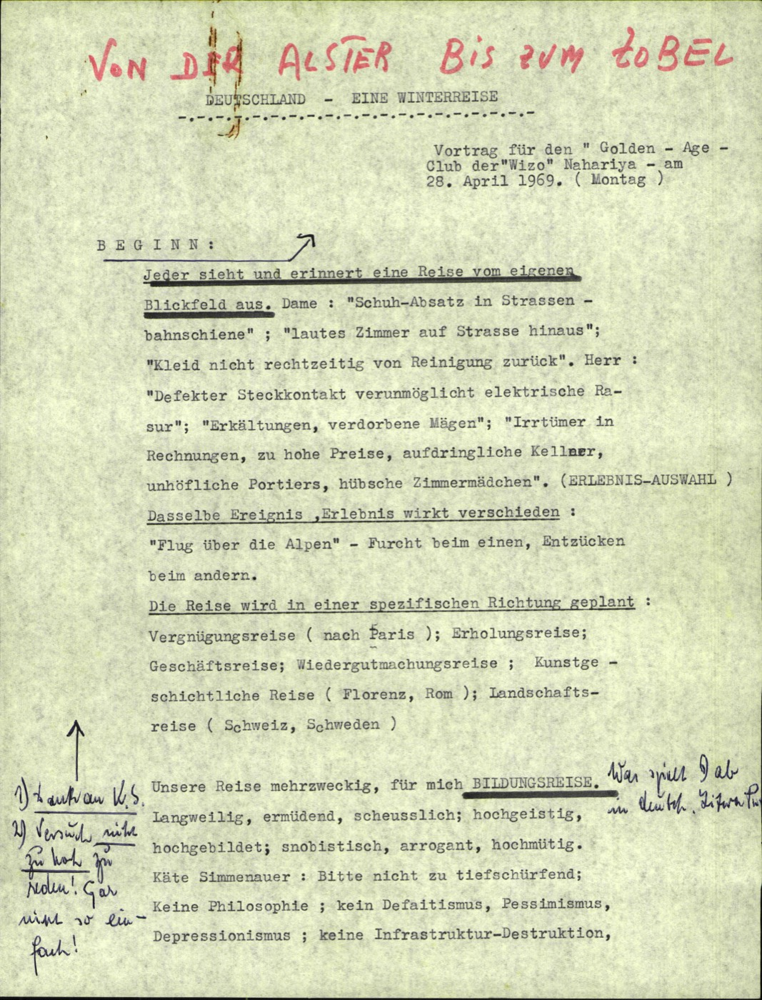
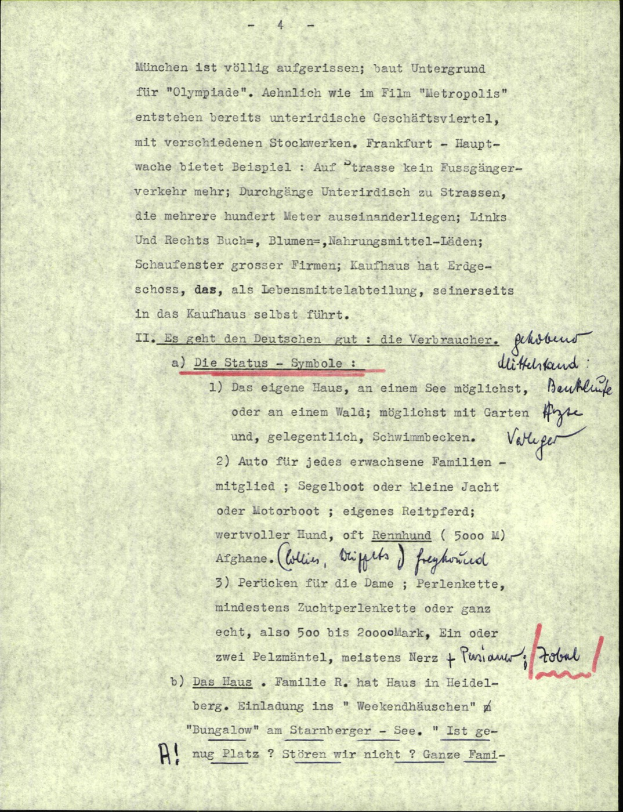
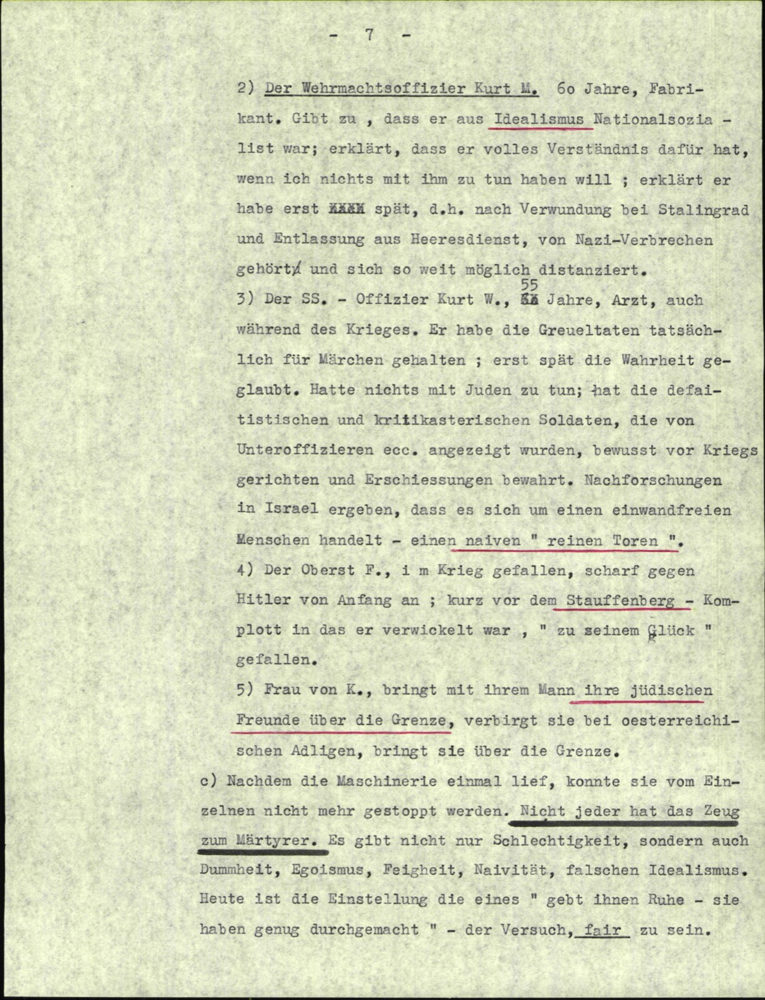

Titelblatt — p. 13
DEUTSCHLAND – EINE WINTERREISE
Vortrag für den „Golden-Age-Club" der „Wizo" Nahariya — am 28. April 1969 (Montag).
Beginn … Jeder sieht und erinnert sein eigenes Blickfeld: Dame — „Schuh-Absatz in Strassenbahnschiene", „lautes Zimmer auf Strasse hinaus", „Kleid nicht rechtzeitig von Reinigung zurück". Herr — „defekter Steckkontakt verunmöglicht elektrische Rasur", „Erkältungen, verdorbene Mägen", „Irrtümer in Rechnungen, aufdringliche Kellner, unhöfliche Portiers …" (Erlebnis-Auswahl)
GERMANY – A WINTER JOURNEY. A lecture for the Golden-Age Club of Wizo Nahariya, 28 April 1969. Everyone sees and remembers his own field of view … a catalogue of small travel vexations (a selection of experiences).

G-F-0113-41 · p. 13 — title page, 1969
p. 16 — „Es geht den Deutschen gut"
München ist völlig aufgerissen; baut Untergrund für „Olympiade". Ähnlich wie im Film „Metropolis" entstehen bereits unterirdische Geschäftsviertel … Frankfurt-Hauptwache bietet Beispiel: auf der Strasse kein Fussgängerverkehr mehr; Durchgänge unterirdisch …
Es geht den Deutschen gut: die Verbraucher. Die Status-Symbole: 1) das eigene Haus, an einem See möglichst, oder an einem Wald; möglichst mit Garten und, gelegentlich, Schwimmbecken. 2) Auto für jedes erwachsene Familienmitglied …
Munich is completely torn open, building the underground for the Olympics; as in the film "Metropolis," subterranean shopping districts are appearing … The Germans are doing well: the status symbols — one's own house, by a lake or a forest if possible, with a garden and sometimes a pool; a car for every adult in the family …

G-F-0113-41 · p. 16 — the Wirtschaftswunder observed
p. 19 — Begegnungen: former Nazis
Der Wehrmachtsoffizier Kurt M., 60 Jahre, Fabrikant, gibt zu, dass er aus Idealismus Nationalsozialist war; erklärt, dass er volles Verständnis dafür hat, wenn ich nichts mit ihm zu tun haben will …
Der SS-Offizier Kurt W., Arzt … habe die Greueltaten tatsächlich für Märchen gehalten. — Der Oberst F., im Krieg gefallen, scharf gegen Hitler von Anfang an; kurz vor dem Stauffenberg-Komplott, in das er verwickelt war, „zu seinem Glück" gefallen.
The Wehrmacht officer Kurt M., 60, a manufacturer, admits he was a National Socialist out of idealism; says he fully understands if I want nothing to do with him. The SS officer Kurt W., a doctor, claims he really took the atrocities for fairy tales. Colonel F., fallen in the war, sharply anti-Hitler from the start, entangled in the Stauffenberg plot — fell "to his luck."

G-F-0113-41 · p. 19 — confronting former Nazis